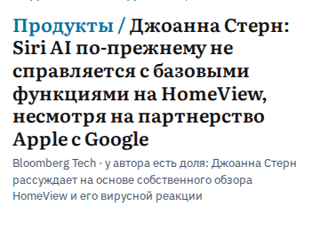
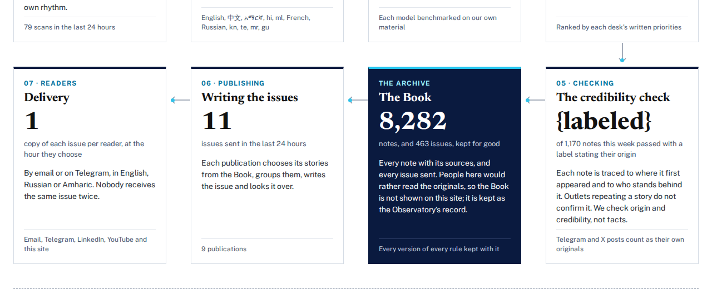
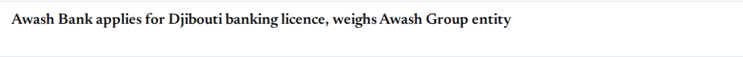
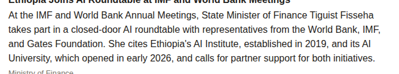
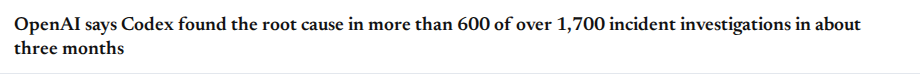
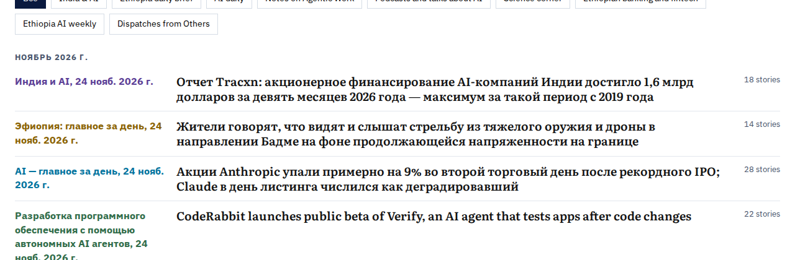
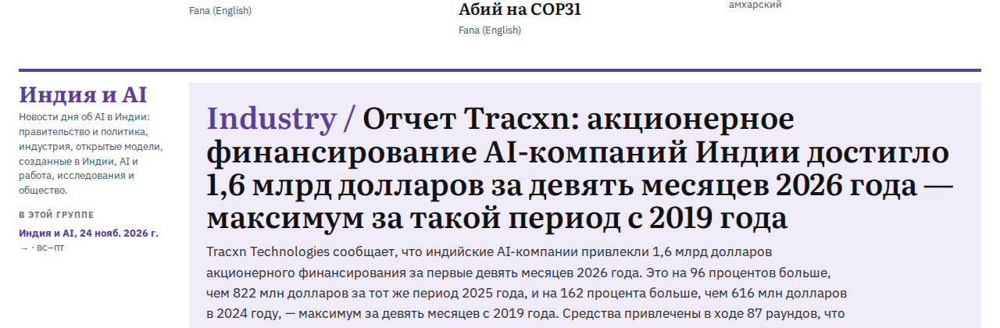
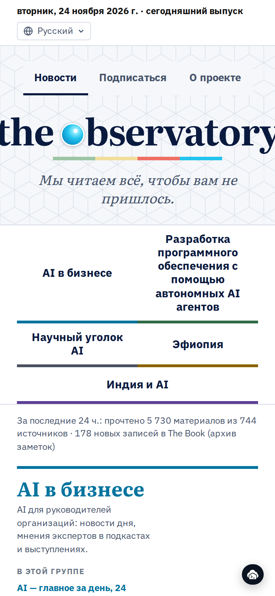
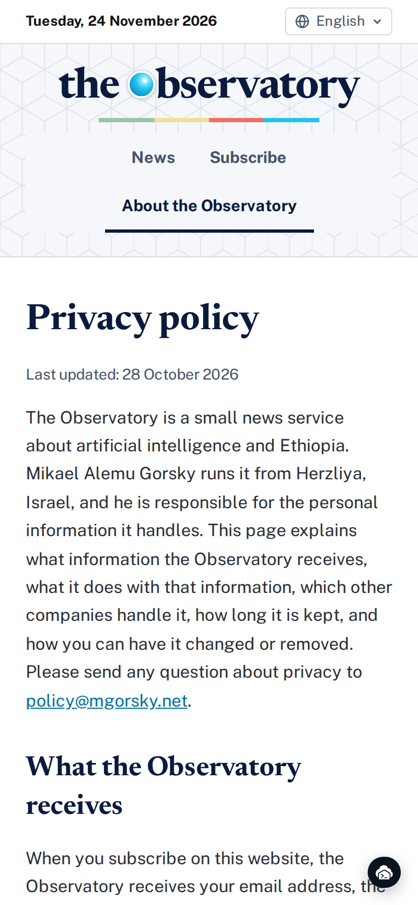

For the team behind The Observatory
The Observatory: a reader's review
Happy Path, the site-testing tool from Podway, read your site the way a careful reader would. We only browsed. We didn't change anything or send any forms.
Where a reader gets stuck
We followed a reader through the site: 15 problems, 3 more from our earlier checks, and 1 clear win. Tap a label to see the details.
Fix these 3 first: source links on issue pages, the “{labeled}” placeholder, the story counts.
What we checked
On 24 November 2026 we loaded 71 pages over 12 minutes, on a computer (1280 px wide) and a phone (390 px), in English and in Russian. We did not test sign-up, email delivery, Telegram, dark mode or keyboard focus.
What works: we picked 9 stories and opened the article each one is based on. All 9 summaries matched their source on numbers, names and dates. All 9 source links worked and were on topic.
Below are 15 things a reader may trip over. Each one showed up in 2 of 2 checks in a fresh browser. They are grouped by what the reader is trying to do. Each card says what "fixed" looks like, so you can check it.
- Checking a story (1–5)
- Choosing a newsletter (6–8)
- Browsing past issues (9–11)
- Reading in Russian and on a phone (12–15)
- From our earlier checks (3 more)
The round "Made with Podway" badge in some screenshots is ours. It is not part of any finding.
Checking a story
1. Issue pages have no links to the sources
Issue pages, e.g. /archive/472/ · computer and phone
What we saw: source names are plain text, such as "TechCrunch; also Bloomberg Technology". Story titles are not links. We counted the links in 8 issues from October and November: all 8 had none. The issue of 29 September has 80 links for 40 stories, and the Notes essay /archive/471/ has 48. Science corner papers have no link to the paper anywhere on the site.

Why it matters: the Terms say "Every note links to its source, and you should read the source before you rely on a claim." On these pages a reader can't.
Fixed when: each story on an issue page links to its original, as /archive/6/ does. Each Science corner paper links to the paper.
2. A source line and an "author has a stake" note are missing
English front page and /ai-in-management/ · computer
What we saw: the story "Joanna Stern says Siri AI still fails basics on the HomeView despite Apple's Google partnership" has no source line. The next story follows at once. The Russian front page shows the line, and so does /archive/451/: "Bloomberg Tech · author has a stake: …".


Why it matters: the stake note is the one warning a reader most needs, and it is the one that disappears.
Fixed when: the English front page shows "Bloomberg Tech · author has a stake: …" under this story, as the Russian page does.
3. A placeholder instead of a number on the About page
/about/ and /ru/about/ · computer and phone
What we saw: in step "05 · Checking / The credibility check", the big number is the literal text "{labeled}", followed by "of 1,170 notes this week passed with a label stating their origin". Every other step shows a number.

Why it matters: it sits on the page that explains how the site checks its facts.
Fixed when: the card shows a number, or the card hides its number when the value is missing. Same on /ru/about/.
4. Story counts are higher than the stories shown
/archive/ and the group pages · computer
What we saw: in 5 of 8 issues we opened, the archive count was higher than the stories on the issue page. "37 stories" (AI daily, 22 Nov) opens 20. "28 stories" (24 Nov) opens 20. "23 stories" opens 20. "18 stories" (India & AI, 24 Nov) opens 12. "14 stories" (Ethiopia daily brief, 24 Nov) opens 12. Three other issues matched. Our guess is that issue pages stop at 20 or 12, but we did not confirm that.

Why it matters: a reader who counts will find 17 stories missing.
Fixed when: each count equals the stories on its issue page, or the issue page lists the rest.
5. The Anthropic IPO figures don't agree
Front page, AI in Management · computer · we are less sure about this one
What we saw: at the same $83 share price, the lead says "the offering of 980 million shares" (that is about $81 billion). The next story says "Anthropic raises $107.3 billion in IPO at $83 per share". A third says "almost $120 billion". An earlier issue's headline calls a $1.4 trillion valuation a "$1.4 trillion IPO".


Why it matters: the numbers may count different things, such as a private placement. The page doesn't say so, so they read as a contradiction.
Fixed when: each figure says what it includes ("including the private placement"), and valuation is not called IPO size.
Choosing a newsletter
6. "Notes on Agentic Work" has two schedules
Group page, /subscribe/, front page, /ru/ · computer
What we saw: "Notes on Agentic Work · Mon, Wed, 18:00", and on the next line "a dense letter every Tuesday and Thursday". The front page says "Mon, Wed", /ru/ says "пн, ср". The latest issue is dated Tuesday, 24 November 2026.

Why it matters: a subscriber picks a delivery hour and needs to know the days.
Fixed when: one schedule appears everywhere and matches the days issues go out.
7. "Dispatches from Others" is offered, but its last issue was 2 November
/subscribe/ and /archive/ · computer and phone
What we saw: /subscribe/ offers "Interesting Politics · Dispatches from Others … Sun–Fri". In the archive, its newest issue is "Dispatches from Others, 2-Nov-26", 22 days before this review. Every other daily has an issue on 24 November. /about/ counts "four desks" including Interesting Politics, but it has no page or menu entry.


Why it matters: we did not subscribe, so we can't say whether it still sends. A reader sees an offer with no recent issue to look at.
Fixed when: it shows new issues again, or it is marked paused, or it leaves /subscribe/.
8. Some days are off the stated schedule
/archive/ · computer
What we saw: Science corner and Ethiopian banking and fintech are listed for Friday. Both have issues on Wednesday 28 October and Friday 30 October, and Science corner has none on Friday 6 November. AI daily and the Ethiopia daily brief ("Sun–Fri") go from 5 November to 8 November with no issue on Friday 6 November. The archive does not mention the gap.

Why it matters: readers who rely on the schedule notice a missing day.
Fixed when: issues follow the stated days, or the archive notes a missed day.
Browsing past issues
9. An issue page doesn't say which issue it is
Issue pages, e.g. /archive/264/ · computer and phone
What we saw: on 11 of 12 issue pages, the page starts with "← The archive" and the group name. The issue's name and date ("Ethiopia daily brief, 29-Oct-26") are only in the browser tab. The only date on the page is the header, "Tuesday, 24 November 2026". There is no link to the previous or next issue.

Why it matters: an old issue reads as today's news.
Fixed when: each issue starts with its name and date, with previous and next links. That heading would also give these pages the main heading they lack (see the last section).
10. Old leads come back, and Science corner entries look the same
/ethiopia/, /ai-science-corner/, /archive/ · computer
What we saw: "Awash Bank applies for Djibouti banking licence" leads the Ethiopia daily brief on 2 November and Ethiopian banking and fintech on 13 November. "National Bank of Ethiopia issues Directive No. FS/01/2026" leads the brief on 18 November and banking on 20 November. Two more leads repeat between AI daily and Podcasts on the same day. All 8 Science corner issues show the same line: "Research papers of the week on AI and the fields around it…".


Why it matters: a repeat reads as new news, and identical entries can't be told apart.
Fixed when: a repeat lead is marked ("first reported 2 Nov") or skipped, and each Science corner entry shows its top paper.
11. The Ethiopia AI weekly is short and repeats itself
/archive/169/ and the Ethiopia AI weekly issues · computer
What we saw: 3 of its last 4 issues have 1 to 3 stories ("1 stories" on 11 Nov). In /archive/169/, one event appears twice: "Ethiopia Seeks Partner Support for AI Institutions at Bangkok Roundtable" (Tigist Fisseha) and "Ethiopia Joins AI Roundtable at IMF and World Bank Meetings" (Tiguist Fisseha), the same person spelled two ways. A recent lead is about a blockchain AI hub (OpenGradient), not Ethiopia.

Why it matters: how many stories a weekly should have is your call. The duplicates and the off-topic lead are the parts a reader will notice.
Fixed when: one event appears once per issue, leads match the desk's topic, and counts read "1 story".
Reading in Russian and on a phone
12. The Russian lists differ from the English ones
/ru/agentic-software-engineering/ vs /agentic-software-engineering/ · computer
What we saw: both pages list the same issues, but 10 of 11 show a different lead story. Issue 471 leads with "OpenAI says Codex found the root cause…" in English and "CodeRabbit launches public beta of Verify…" in Russian. 5 Russian leads are in English. Issue 344 is dated 10 November in English and 9 November in Russian.


Why it matters: a reader who switches language sees a different newspaper.
Fixed when: each issue has the same lead and date in both languages, translated.
13. English words left on Russian pages
/ru/archive/, /ru/, /ru/india/ · computer
What we saw: /ru/archive/ says "N stories" in English 132 times. /ru/india/ has the heading "The publications". /ru/ has "Industry / Отчет Tracxn" where other categories are Russian ("Компании /"), and a Spanish word: "Модели visión-язык".


Fixed when: these strings are Russian, with Russian plural forms for the counts.
14. The Russian logo is cut off on a phone
/ru/ · phone, 390 px
What we saw: the logo is 403 px wide on a 390 px screen. The "t" and the "y" are cut. The English logo fits.

Fixed when: the logo fits inside the screen on /ru/, as on /.
15. Small filter buttons and broken dates on the phone archive
/archive/ · phone, 390 px
What we saw: the 10 filter buttons are 34 px tall. The filters work and the selected one is clear. Dates break in the middle: "Dispatches from Others, 2-" on one line and "Nov-26" on the next.

Fixed when: the buttons are about 44 px tall and each date stays on one line.
From our earlier checks
Happy Path has looked at the public pages once a day since 23 November. These three came from those checks.
The visitor counter stops with an error
14 pages, including /, /about/ and the topic pages · computer and phone
What we saw: the page's script stops with goatcounter.count is not a function. Nothing on the screen shows it, so there is no screenshot. The Privacy page says the site counts visits with GoatCounter.
Fixed when: the error is gone from the browser console and visits appear in GoatCounter.
The Privacy page slides sideways on a phone
/privacy/ · phone, 390 px
What we saw: a long web address is wider than the screen, so the page moves left and right.

Fixed when: long addresses wrap and the page no longer scrolls sideways.
Four pages have no main heading
/, /ru/, /archive/472/, /ru/archive/472/
What we saw: these pages have no top-level heading. On the front page the logo picture is the only title. Screen readers and search engines use that heading to tell what a page is. It is not visible, so there is no screenshot.
Fixed when: each page has one main heading (card 9's issue heading would cover the issue pages).
After changes
Tell us when you have made changes, and we will run the same checks again and mark what is fixed.
If you would like these as GitHub issues that are rechecked on their own after each fix, Happy Path can do that: usehappypath.github.io.